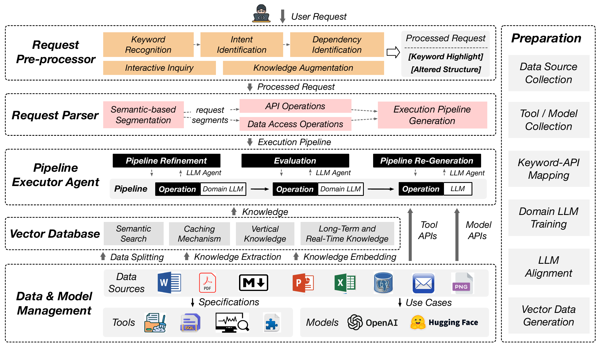

<!-- Slide 5 — Architecture LLMDB -->
<div class="slide">
    <div class="slide-content">
        <h2>Les 5 composants de LLMDB</h2>
        <style>
            .slide-05-steps.steps { margin-top: 0; }
            .slide-05-steps.steps li { gap: 0.6rem; padding: 0.35rem 0.5rem; font-size: 0.88rem; line-height: 1.4; }
            .slide-05-steps.steps li::before { min-width: 22px; height: 22px; font-size: 0.72rem; line-height: 22px; }
            .slide-05-steps .li-row { display: flex; align-items: baseline; gap: 0.5rem; flex: 1; }
            .slide-05-steps .li-row strong { font-size: 1rem; white-space: nowrap; min-width: 10.5rem; flex-shrink: 0; }
            .slide-05-steps .li-row span { color: var(--text-secondary); }
        </style>
        <div class="two-col">
            <div style="display:flex;flex-direction:column;gap:0.4rem;padding:0.3rem 0.3rem 1rem;">
                <ol class="steps slide-05-steps">
                    <li><span class="li-row"><strong>General LLM</strong><span>— compréhension du langage naturel, décomposition des requêtes</span></span></li>
                    <li class="fragment fade-left" data-fragment-index="1"><span class="li-row"><strong>Domain LLM</strong><span>— fine-tuné sur les outils, APIs et schémas métier</span></span></li>
                    <li class="fragment fade-left" data-fragment-index="2"><span class="li-row"><strong>LLM Executor Agent</strong><span>— génère, évalue et régénère les pipelines</span></span></li>
                    <li class="fragment fade-left" data-fragment-index="3"><span class="li-row"><strong>Vector Database</strong><span>— cache sémantique des connaissances et résultats</span></span></li>
                    <li class="fragment fade-left" data-fragment-index="4"><span class="li-row"><strong>Data Source Manager</strong><span>— unifie accès aux outils, modèles et données</span></span></li>
                </ol>
                <div class="callout-info fragment" data-fragment-index="5" style="font-size:0.78rem;">
                    Ces 5 composants opèrent en <strong>2 temps</strong> : préparation offline → inférence online
                </div>
            </div>
            <figure class="figure-box" onclick="openLightbox(this)">
                
                <figcaption>Vue d'ensemble de l'architecture LLMDB<span class="zoom-hint">↗ zoom</span></figcaption>
            </figure>
        </div>
    </div>
</div>
